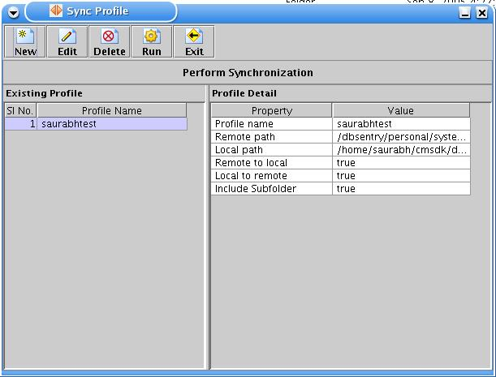

Initiating synchronization:
Clicking on Synchronize button from toolbar at FileSync startup window , will initiate synchronization by opening following 'Sync Profile'Clicking on Synchronize button from toolbar at FileSync startup window , will initiate synchronization by opening following 'Sync Profile' window.

which which consists of following parts :
Tool Bar
Profile Panel consists of
Profile list
Profile detail table